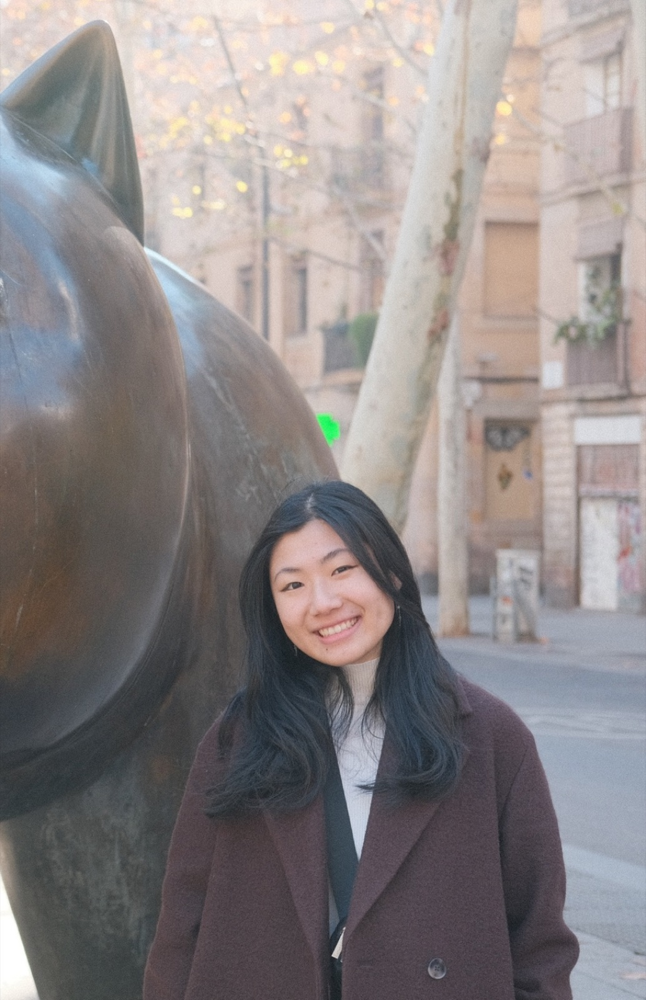
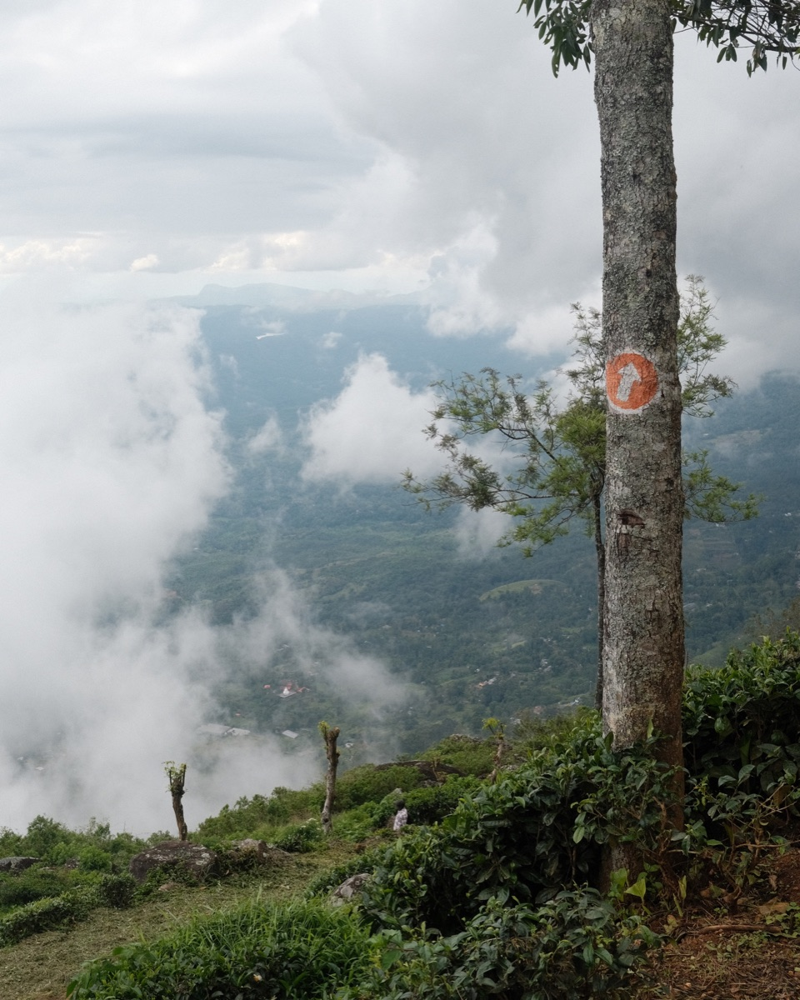
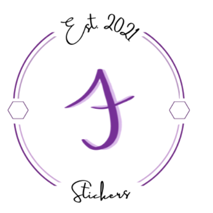
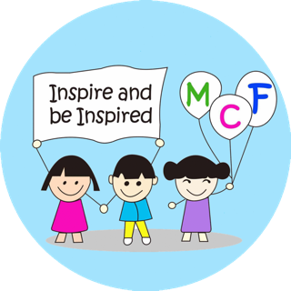

Nice to meet you!
I graduated from Emory in 2022 with degrees in Computer Science and Economics, then spent three years at Bain & Company's Tech Insights Group, running product and technology due diligence for private equity investors.
I'm now an MBA candidate at the Yale School of Management, deliberately pointing that same toolkit at social enterprises and impact-driven products. In 2026 that has meant rebuilding the impact measurement architecture for an education social enterprise serving 1,000+ schools in Nairobi — and product strategy at ReadWorks, a literacy nonprofit reaching 11.5M teachers/students a year.
Outside of work, I enjoy anything art-related, long walks, cooking/hosting, and am reliably enthusiastic about picking up a new hobby!
Recent life skillLearned how to bike!
Favorite tripSri Lanka
Current artsy hobbyPhotography
Where I've been
-
MBA Candidate · Yale School of Management
2025 – 2027- Teaching Assistant for Global Social Entrepreneurship, Spring 2027.
- Coursework in Product Management, Marketing, Accounting, Management of Software Development, and Mission Driven Innovation.
-
Product Strategy & Analytics Intern · ReadWorks
Summer 2026- Improved an internal content-creation AI tool's performance by ~20% by directing comprehensive cross-functional testing.
- Led feature analysis on question-prompt design and its impact for a flagship product serving 11.5M users annually.
- Uncovered user engagement analytics in Tableau and wrote the user guide that standardized the analysis process for marketing.
-
Consultant · Bain & Company, Technology Insights Group
2022 – 2025- Executed 35+ private equity product and technology diligences and strategy projects — 10+ as workstream lead, supervising ~2 associates.
- Assessed software product-market fit, competitive landscape, and R&D roadmap feasibility to inform investment decisions.
-
Website Lead · AirEmory
2019 – 2022- Orchestrated the development and UX design of the website for a student-led air quality sensor project — AirEmory on GitHub.
- Coordinated with local organizations and schools to run the Georgia Air Quality Challenge with 40+ participants.
-
B.A. Computer Science & B.A. Economics · Emory University
2018 – 2022- President, Girls Who Code (Emory chapter). President & founding member, ProgramHers, Emory's women-in-tech organization.
- Teaching Assistant for Database Systems and Macroeconomics.
- Coursework in Multidisciplinary Design, Design Thinking, AI/ML, and Database Systems.
Projects
Impact & product strategy
ReadWorks
View projectAirEmory
View projectDesign, marketing & research

Brand & marketing · E-commerceAJ Stickers
View projectDesign Thinking @ Goizueta
View projectCIMM Research
View projectCommunity
Boundless Literacy
Board of Directors · New Haven
Learn moreBoston Chinatown Neighborhood Center
College Access Mentor · Boston
Learn more
Migrant Children's Foundation
Volunteer · Beijing (remote)
Learn moreWomen in Tech Orgs
President · Founder · Fellow
Learn more